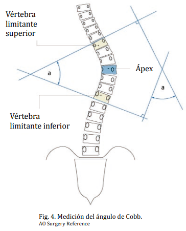
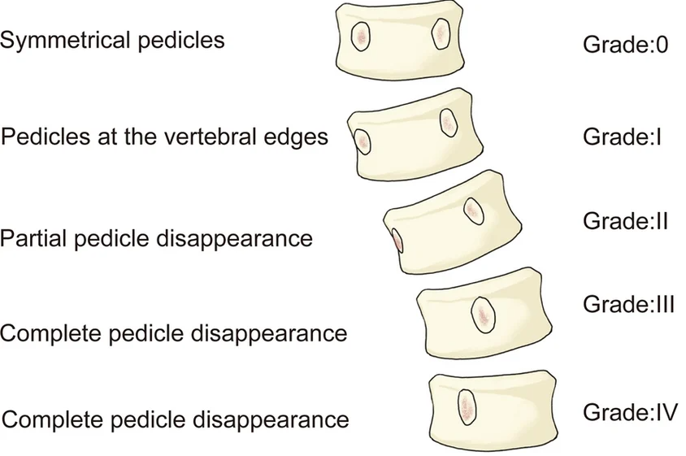
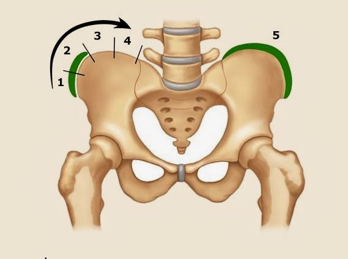

Guía de Medición (SERME / SRS)
1. Plano Coronal (Normalidad < 10º)
Cobb: Intersección de líneas perpendiculares a los platillos de las vértebras límite.


2. Balance y Pelvis
- Plomada de C7: Debe caer sobre la línea sacra media (CSVL). Desviaciones >15 mm son significativas.
- Báscula Pélvica: Desnivel de crestas ilíacas.
3. Plano Sagital (Trazado y Gradación)
Los ángulos en el plano sagital se miden mediante el método de Cobb modificado:
- Cifosis Torácica (T2-T12): Se traza una línea tangente al platillo superior de T2 (o la vértebra más craneal visible) y otra al platillo inferior de T12.
Normal: 20º a 45º. (<20º Hipocifosis / >45º Hipercifosis). - Lordosis Lumbar (L1-S1): Se traza una línea tangente al platillo superior de L1 y otra al platillo superior de S1.
Normal: 40º a 60º. (<40º Hipolordosis o Dorso plano / >60º Hiperlordosis).
4. Madurez (Signo de Risser)
